Cairo City
DANGER MAN: Judgement Day (Don Chaffey: 1965)
Footage of Arabic City (World Backgrounds 10300 and 10319, ‘Panning shot over Cairo’)
Cairo Tower, Zam´lik
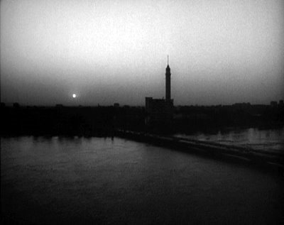
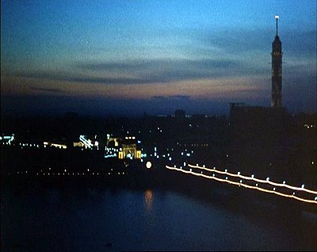
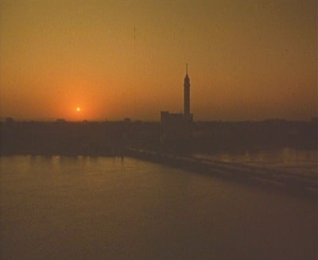
DANGER
MAN: I Can Only Offer
You Sherry (George Pollock: 1965)
Establishing shots of Baghdad (World Backgrounds, 310303, “T/S
Over Cairo At Sunset - Sun Seen On Horizon”)
(Identified by Paul Stroud, November 2014)
THE
BARON: Red Horse, Red
Rider (John Moxey: ??)
The city of Vermansa. (World Backgrounds, 310303)
DEPARTMENT
S: A Fish Out of Water
(Cyril Frankel: April 1969)
On his arrival in Beirut Interpol agent Birney is told of the many
sights he can see in the town.
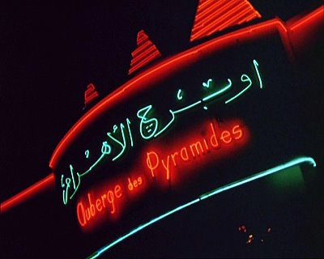
DEPARTMENT
S: A Fish Out of Water
(Cyril Frankel: April 1969)
On his arrival in Beirut Interpol agent Birney is told of the many
sights he can see in the town. (WB 11510)
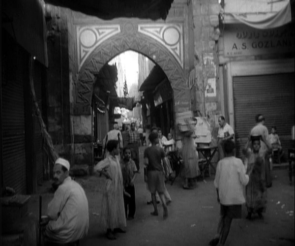
DANGER
MAN: Fish on the Hook
(Robert
Day: March 1964)
John Drake pays a visit to Twfik’s camer shop in the souk.
(Spotted by Paul Stroud, March 2014)

DANGER
MAN: Find and Return
(Seth Holt: 1959)
Establishing shot of Beth Ja Brin.
(Spotted by Paul Stroud, March 2014)
DANGER
MAN: The Blue Veil
(Charles Frend: 1959)
Establishing shot of the town of Medii,
(Spotted by Paul Stroud, May 2014)
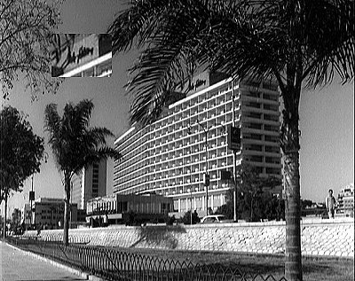
DANGER
MAN: Fish on the Hook (Robert
Day: March 1964)
Gerdie takes Drake to the flat above the Ryder offices.
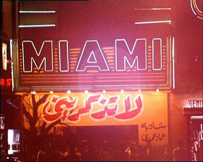
DEPARTMENT
S: A Fish Out of Water
(Cyril Frankel: April
1969)
On his arrival in Beirut Interpol agent Birney is told of the many
sights he can see in the town. (WB 11508)
Giza
Dr.Salem El-Hendawy Palace Abdullah El-Kateb Street, Dokki

DANGER MAN: I Can Only Offer You Sherry (George Pollock: 1965)
Drake
goes to police headquarters to confront Colonel Nubar.
(Identified by Sietse Postma, February 2025)
THE CHAMPIONS: Desert Journey (Paul Dickson: Spring
1968)
A peace conference is taking place in Kasfareet, El Hami which could determine the fate of the country.
(Identified by Sietse Postma, February 2025)
Damietta Governorate
Ras El-Bar
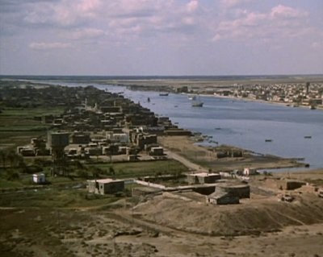

THE CHAMPIONS: Desert Journey (Paul Dickson: Spring 1968)
Establishing shot of Kasfareet, El Hami where Major Tuat is preparing for the peace conference.
(Identified by Sietse Postma, February 2025)
Port Said
Port Said Docks
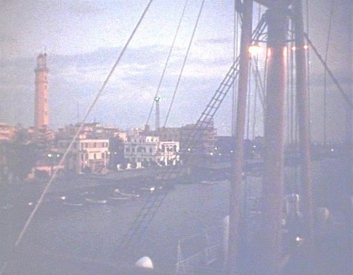
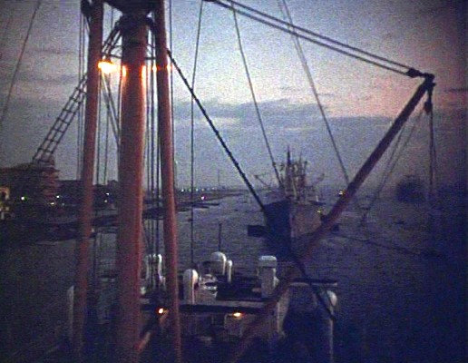
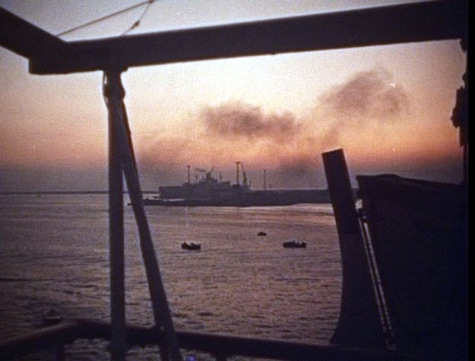
THE BARON: Night of the Hunter (Roy Baker: July 1966)
Mannering and Nichol arrive at the port to find the ship on which Madame Nicharos intends to leave the country.
Return to Index